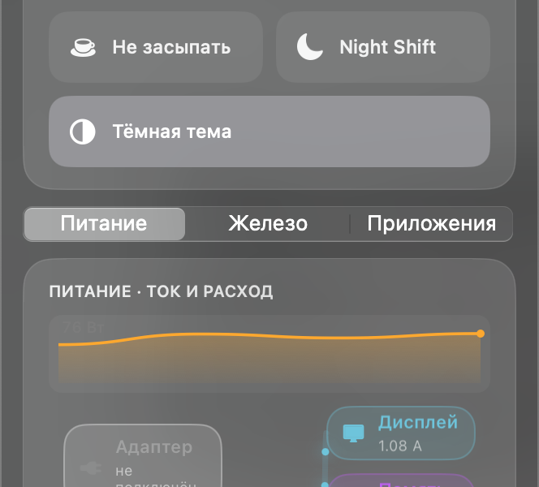
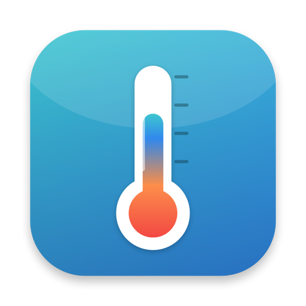
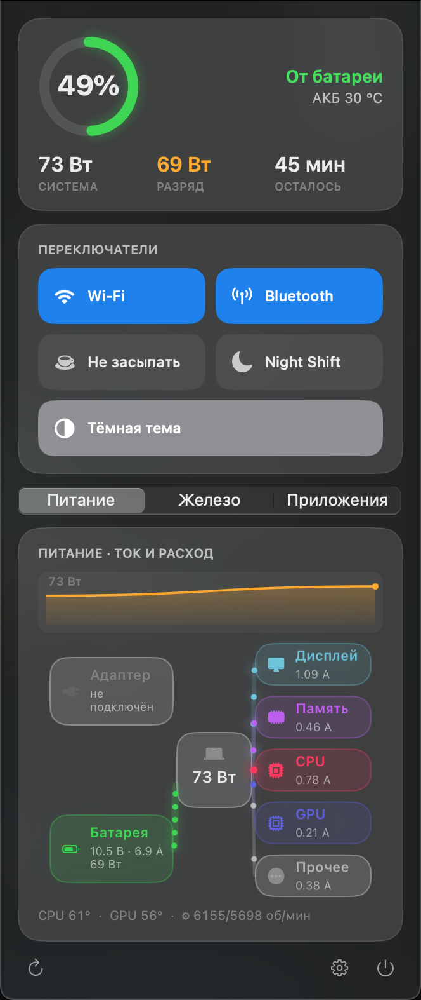
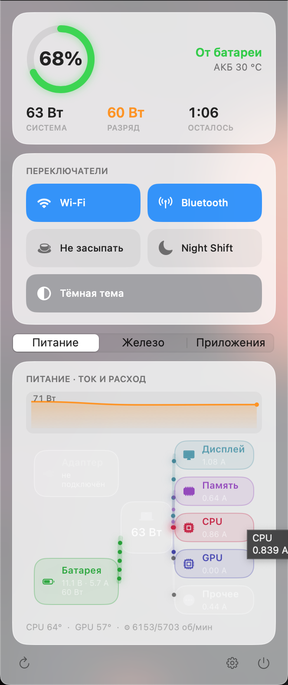

Энергия как на ладони
Кольцо заряда, живой график расхода и интерактивная схема энергопотоков из SMC — видно, куда уходят ватты и амперы.


KelvinЭнергия, вентиляторы, быстрые переключатели, авто-раскладка, приватность и инструменты разработчика — в одной нативной панели строки меню. Локально. Без телеметрии.
Мониторинг бесплатен навсегда · Pro: разовая покупка, без подписки · macOS 11+ · Intel и Apple Silicon

Кольцо заряда, живой график расхода и интерактивная схема энергопотоков из SMC — видно, куда уходят ватты и амперы.

Профили: постоянные обороты, кривая по сенсору, авто. Защита по перегреву. Системный демон ставится в один клик.
Wi-Fi, Bluetooth, Night Shift, тёмная тема, подсветка клавы — и свои кнопки-команды. Полностью настраиваемая плитка.
Локальная замена Punto Switcher: исправляет неверную раскладку и хоткей-переключение — без облака и телеметрии.
Встроенный ALF, блок входящих «паника», блокировка доменов, карантин и Gatekeeper — управление в пару кликов.
Homebrew, IDE и библиотеки из меню. Смена разрешения экрана, Finder-тумблеры, мониторинг CPU/RAM в строке меню.
Видеть всё можно бесплатно. Pro открывает возможность управлять и автоматизировать.
0 ₽ навсегда
$19 разово
Стеклянные плитки, непрерывные скругления, мягкие тени и микро-анимации. Светлая и тёмная темы. Панель собирается под себя — какие блоки показывать и в каком порядке.

Оплата и лицензии через Lemon Squeezy (Merchant of Record). Карты, Apple Pay, PayPal. Чек и НДС — на стороне магазина.
Kelvin создавался как локальная альтернатива утилитам с телеметрией. Привилегированные действия (демоны, фаервол) запрашивают пароль через системный диалог — прозрачно и под вашим контролем.
Нет. Kelvin Pro — разовая покупка $19. Подписок и регулярных списаний нет. Крупные мажорные версии в будущем могут быть платным апгрейдом со скидкой для владельцев.
На 2 компьютера. Лицензию можно деактивировать на одном Mac и перенести на другой — например, при замене или продаже техники.
Весь мониторинг — навсегда: заряд, ватты, температуры, вентиляторы, нагрузка, показатели в строке меню и базовые переключатели. Pro добавляет управление и автоматизацию.
Да, на Intel и Apple Silicon, macOS 11 и новее. Набор сенсоров и переключение графики зависят от модели — Kelvin показывает только доступное на вашем Mac.
Да, в течение 14 дней — плюс бесплатный пробный период открывает все Pro-функции на 14 дней ещё до покупки.
Управление вентиляторами, лимит заряда, фаервол и системные демоны несовместимы с песочницей App Store. Поэтому Kelvin распространяется напрямую — нотаризованным DMG, который проходит проверки Apple Gatekeeper.
Бесплатно для macOS 11+. Pro открывается прямо в приложении.
Нотаризовано Apple. При первом запуске Pro-функций macOS попросит разрешение в Системных настройках → Конфиденциальность и безопасность.